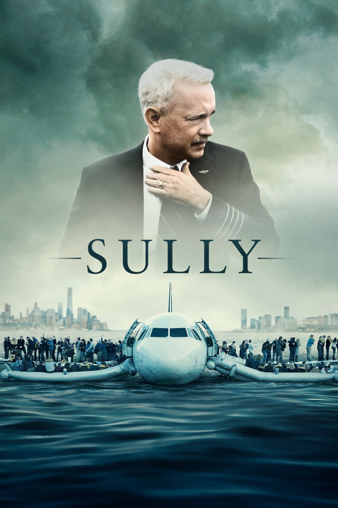

Мировая премьера: 9 сентября 2016
Слоган: Правдивая история о чудесном спасении.
Сюжет: 15 января 2009 года командир воздушного судна Чесли "Салли" Салленбергер и его второй пилот приступили к выполнению рутинного полёта, который быстро превратился в чрезвычайную ситуацию. Совершив невозможное, Салли удалось спланировать над ледяными водами реки Гудзон и приводнить неисправный самолёт, сохранив жизни всех 155 человек на борту. И хотя общество и пресса были готовы носить Салли на руках за его отвагу и высшее лётное мастерство, началось расследование, поставившее под угрозу репутацию и карьеру заслуженного лётчика.
Режиссёр: Клинт Иствуд
В основе: Документальная книга Чесли Б. "Салли" Салленбергера и Джеффри Заслоу "Чудо на Гудзоне" (США, 2009)
В ролях: |
Том Хэнкс | Командир Чесли "Салли" Салленбергер |
| Аарон Экхарт | Второй пилот Джефф Скайлс | |
| Майк О'Мэлли | Чарльз Портер | |
| Лора Линни | Лорри Салленбергер | |
| Патч Дарра | Патрик Хартен | |
| Анна Ганн | Элизабет Дэвис | |
| Джейми Шеридан | Бен Эдвардс | |
| Сэм Хантингтон | Джефф Колоджей | |
| Бретт Райс | Карл Кларк | |
| Энн Кьюсак | Донна Дент | |
| Джейн Габберт | Шила Дейл | |
| Молли Хэйгэн | Дорин Уэлш | |
| Холт МакКэллани | Майк Клири | |
| Крис Бауэр | Ларри Руни | |
| Роберт Тревилер | Генри | |
| Майкл Рапапорт | Пит |
Бюджет: $ 60 млн.
Кассовые сборы в США: $ 125 млн.
Кассовые сборы в мире: $ 244 млн.
Продолжительность: 1 ч. 29 мин.
Рейтинг: 7.5